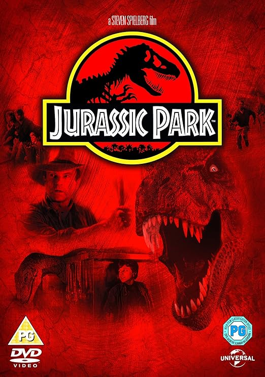
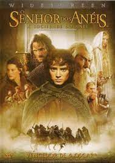
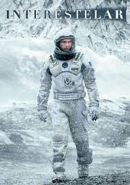

📅14 de Outubro de 2023
Jurassic Park (1993) : Uma Jornada Épica ao Mundo Pré-Histórico Reinventado
Explorando os Limites da Imaginação e da Tecnologia na Era dos Dinossauros Digitais

📅14 de Outubro de 2023
O Senhor dos Anéis: A Sociedade do Anel (2001) : Uma Jornada Inesquecível
Rumo à Grandeza Épica
Explorando os Limites da Imaginação e da Tecnologia na Era dos Dinossauros Digitais

📅15 de Outubro de 2023
De Volta para o Futuro (1985) : Uma Aventura Temporal Inesquecível que
Cativa Gerações
"Explorando o Fascínio da Viagem no Tempo e a Importância de Moldar o Próprio Destino

📅17 de Outubro de 2023
Interestelar (2014) : Além das Estrelas: Uma Jornada de Esperança, Ciência
e Amor
Navegando pelos Confins do Universo em Busca da Salvação da Humanidade e do Destino da Terra

📅23 de Outubro de 2023
O Poderoso Chefão (1972) : A Ascensão e Queda do Poder na Máfia Americana
Explorando os Intricados Laços Familiares e os Conflitos de Consciência em Meio ao Mundo do
Crime Organizado